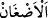
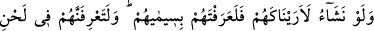
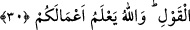

“Yoksa kalblerinde hastalık” nifak “bulunanlar” münafıklar, “Allah’ın,
kendilerinin” kalplerinde müminlere olan “kinlerini” kötülük ve düşmanlıklarını
“ortaya çıkarmayacağını,” bunu Rasulullah’a ve müminlere ibraz etmeyeceğini ve
işlerinin böyle örtülü kalacağını “mı sandılar?”
Nifak, şüphe, tereddüd ve benzeri gibi kalbî bir hastalıktır.
(adğân) dığn
kelimesinin çoğulu olup “kin” mânâsındadır. Kalpte düşmanlığı tutup o düşmanlığı icra
etmek için fırsat kollamaktır. Bu hâl hayvanlar arasında daha çok devede görüldüğü için
böyle kimseler deveye benzetilir ve ona “deve gibi kinci” denilir.
Bazı eserlerde şöyle denilmektedir: Dinî bakımdan kalbinde yamukluk olup içten içe
yan çizen, bozuk niyetli, kötü kalpli biri, bu durumu deşifre edilip rezil olmadan ölmez.
Bu insan sarımsak taşıyıp satan biri gibidir ki mutlaka nahoş kokusu etraftan duyulur.
Sünnet-i seniyye yolunda sabit duran kişi ise misk taşıyan gibidir ki, o da güzel kokunun
çevreye yayılmasına engel olamaz.
Eğer hâlis miske sahip değilsen konuşma,
Eğer varsa, kokusuyla o kendini zaten belli eder.
30. Biz dileseydik onları sana gösterirdik de sen onları sîmalarından tanırdın.
Andolsun ki sen onları sözlerinin üslûbundan tanırsın. Allah yaptığınız işleri bilir.
“Biz” onları sana göstermeyi “dileseydik onları sana gösterirdik de sen onları
sîmalarından tanırdın.” Onları şahsen ve bizzat tanıyabileceğin delillerle onları sana
tanıtırdık. “Andolsun ki sen onları” bizim kendilerini damgaladığımız alâmet ve
“sözlerinin üslûbundan” yahut sözü dokundurucu ve şüphe verici bir yöne
kaydırmalarından “tanırsın. Allah yaptığınız işleri bilir.” Dolayısıyla size niyetinize
göre bir karşılık verecektir.
Kamus’ta şöyle denilmiştir.
(sûmet, simyet, sîmâ, sîmiyâ)
kelimelerinin hepsi “alâmet” mânasındadır. Sûm de zikredilmiştir Enes (r.a.) den
rivâyet edildiğine göre, bu âyet indikten sonra münafıklardan hiç kimse Peygamberimiz
(s.a.)’e gizli kalmamıştır. Efendimiz (a.s.) artık onları sîmalarından tanırdı. Bizim de
katıldığımız savaşların birinde dokuz civarında münafık vardı. İnsanlar bunlardan
şüpheleniyorlardı. Bir gece uyudular. Sabahleyin uyanıp kalktıklarında her birinin yüz
ve alınlarında “bu münafıktır” diye yazılıydı.
Aynü’l-Meâni’de şöyle denilmiştir: Bu münafıklardan her birinin alnında, vücuda
haricen yapılan dövme gibi “bu münafıktır” diye yazılıydı.